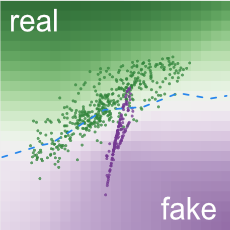

Each dot is a 2D data sample:
real samples;
fake samples.
Background colors of grid cells represent
discriminator's classifications.
Samples in
green regions
are likely to be real;
those in
purple regions
likely fake.
Manifold represents
generator's transformation results from noise space.
Opacity encodes density:
darker purple means more samples in smaller area.
Pink lines from fake samples represent
gradients for generator.
This sample needs to move upper right
to decrease generator's loss.
Draw a distribution above, then click the apply button.
Metrics
Play with Generated Adversarial Networks (GANs) in your browser!
Many machine learning systems look at some kind of complicated input (say, an image) and produce a simple output (a label like, "cat"). By contrast, the goal of a generative model is something like the opposite: take a small piece of input—perhaps a few random numbers—and produce a complex output, like an image of a realistic-looking face. A generative adversarial network (GAN) is an especially effective type of generative model, introduced only a few years ago, which has been a subject of intense interest in the machine learning community.
You might wonder why we want a system that produces realistic images, or plausible simulations of any other kind of data. Besides the intrinsic intellectual challenge, this turns out to be a surprisingly handy tool, with applications ranging from art to enhancing blurry images.
How does a GAN work?
The idea of a machine "creating" realistic images from scratch can seem like magic, but GANs use two key tricks to turn a vague, seemingly impossible goal into reality.
The first idea, not new to GANs, is to use randomness as an ingredient. At a basic level, this makes sense: it wouldn't be very exciting if you built a system that produced the same face each time it ran. Just as important, though, is that thinking in terms of probabilities also helps us translate the problem of generating images into a natural mathematical framework. We obviously don't want to pick images at uniformly at random, since that would just produce noise. Instead, we want our system to learn about which images are likely to be faces, and which aren't. Mathematically, this involves modeling a probability distribution on images, that is, a function that tells us which images are likely to be faces and which aren't. This type of problem—modeling a function on a high-dimensional space—is exactly the sort of thing neural networks are made for.
The big insights that defines a GAN is to set up this modeling problem as a kind of contest. This is where the "adversarial" part of the name comes from. The key idea is to build not one, but two competing networks: a generator and a discriminator. The generator tries to create random synthetic outputs (for instance, images of faces), while the discriminator tries to tell these apart from real outputs (say, a database of celebrities). The hope is that as the two networks face off, they'll both get better and better—with the end result being a generator network that produces realistic outputs.
To sum up: Generative adversarial networks are neural networks that learn to choose samples from a special distribution (the "generative" part of the name), and they do this by setting up a competition (hence "adversarial").
What's happening in the visualization?
GANs are complicated beasts, and the visualization has a lot going on. Here are the basic ideas.
First, we're not visualizing anything as complex as generating realistic images. Instead, we're showing a GAN that learns a distribution of points in just two dimensions. There's no real application of something this simple, but it's much easier to show the system's mechanics. For one thing, probability distributions in plain old 2D (x,y) space are much easier to visualize than distributions in the space of high-resolution images.
Pick a data distribution.
At top, you can choose a probability distribution for GAN to learn, which we visualize as a set of data samples. Once you choose one, we show them at two places: a smaller version in the model overview graph view on the left; and a larger version in the layered distributions view on the right.
Figure 1. Selected data distribution is shown at two places.
We designed the two views to help you better understand how a GAN works to generate realistic samples:
(1) The model overview graph shows the architecture of a GAN, its major components and how they are connected, and also visualizes results produced by the components;
(2) The layered distributions view overlays the visualizations of the components from the model overview graph, so you can more easily compare the component outputs when analyzing the model.
Let training begin.
To start training the GAN model, click the play button () on the toolbar. Besides real samples from your chosen distribution, you'll also see fake samples that are generated by the model. Fake samples' positions continually updated as the training progresses. A perfect GAN will create fake samples whose distribution is indistinguishable from that of the real samples. When that happens, in the layered distributions view, you will see the two distributions nicely overlap.
Figure 2. Fake samples' positions continually updated as the training progresses. Then, the distributions of the real and fake samples nicely overlap.
Visualizing generator and discriminator.
Recall that the generator and discriminator within a GAN is having a little contest, competing against each other, iteratively updating the fake samples to become more similar to the real ones. GAN Lab visualizes the interactions between them.
Generator.
As described earlier, the generator is a function that transforms a random input into a synthetic output. In GAN Lab, a random input is a 2D sample with a (x, y) value (drawn from a uniform or Gaussian distribution), and the output is also a 2D sample, but mapped into a different position, which is a fake sample. One way to visualize this mapping is using manifold[Olah, 2014]. The input space is represented as a uniform square grid. As the function maps positions in the input space into new positions, if we visualize the output, the whole grid, now consisting of irregular quadrangles, would look like a warped version of the original regular grid. The area (or density) of each (warped) cell has now changed, and we encode the density as opacity, so a higher opacity means more samples in smaller space. A very fine-grained manifold will look almost the same as the visualization of the fake samples. This visualization shows how the generator learns a mapping function to make its output look similar to the distribution of the real samples.
Figure 3. The generator's data transformation is visualized as a manifold, which turns input noise (leftmost) into fake samples (rightmost).
Discriminator.
As the generator creates fake samples, the discriminator, a binary classifier, tries to tell them apart from the real samples. GAN Lab visualizes its decision boundary as a 2D heatmap (similar to TensorFlow Playground). The background colors of a grid cell encode the confidence values of the classifier's results. Darker green means that samples in that region are more likely to be real; darker purple, more likely to be fake. As a GAN approaches the optimum, the whole heatmap will become more gray overall, signalling that the discriminator can no longer easily distinguish fake examples from the real ones.

Figure 4. The discriminator's performance can be interpreted through a 2D heatmap. Here, the discriminator is performing well, since most real samples lies on its classification surface’s green region (and fake samples on purple region).
Understanding interplay between generator and discriminator.
In a GAN, its two networks influence each other as they iteratively update themselves. A great use for GAN Lab is to use its visualization to learn how the generator incrementally updates to improve itself to generate fake samples that are increasingly more realistic. The generator does it by trying to fool the discriminator. The generator's loss value decreases when the discriminator classifies fake samples as real (bad for discriminator, but good for generator). GAN Lab visualizes gradients (as pink lines) for the fake samples such that the generator would achieve its success.
Figure 5. Fake samples' movement directions are indicated by the generator’s gradients (pink lines) based on those samples' current locations and the discriminator's curren classification surface (visualized by background colors).
This way, the generator gradually improves to produce samples that are even more realistic. Once the fake samples are updated, the discriminator will update accordingly to finetune its decision boundary, and awaits the next batch of fake samples that try to fool itself. This iterative update process continues until the discriminator cannot tell real and fake samples apart.
Playing with interactive features.
GAN Lab has many cool features that support interactive experimentation.
Interactive hyperparameter adjustment
Click the edit icon () to reveal individual hyperparameters, and edit them on the fly during training.
User-defined data distribution
If you don't like our selection of distributions, draw your own by clicking the icon () at the end of the data distributions list.
Slow-motion mode
Lost track of the animation? Then you can slow it down by clicking the slow-motion icon () to enter slow-mo.
Check out this video
Manual step-by-step execution
If you want more control, you can manually train individual iteration step by step by clicking the icon ().
Check out this video
Check out the following video for a quick look at GAN Lab's features.
Introduction of GAN Lab
(0:00-0:38)
Training of a simple distribution with hyperparameter adjustments
(0:38-1:05)
Training of a user-defined distribution
(1:05-1:51)
Slow-motion mode
(1:51-2:19)
Manual step-by-step execution
(2:19-3:10)
How is it implemented?
GAN Lab uses TensorFlow.js,
an in-browser GPU-accelerated deep learning library.
Everything, from model training to visualization, is implemented with
JavaScript. You only need a web browser like Chrome to run GAN Lab.
Our implementation approach significantly broadens people's access to
interactive tools for deep learning.
The source code is available on
GitHub.